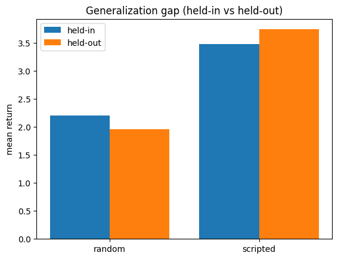
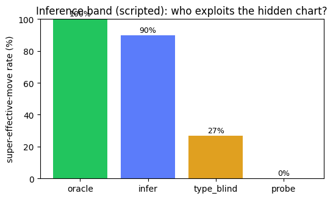

게임플레이
규칙기반(scripted) baseline 에이전트가 처음 보는 held-out 세계(새 맵 + 새 숨은 타입표)에 놓여 맵을 탐색하고, 체육관에서 전투하며, 보스를 격파합니다 — 이 세계로 학습한 적 없음:

색깔의 의미
- 에이전트(플레이어)
- 잡을 수 있는 생물
- 안 깬 체육관(격파할 보스)
- 깬 체육관
- 빈 칸
장기 호라이즌 행위성과 맥락 내 규칙 추론을 측정하는 절차생성 creature-collection 강화학습 환경.
각 baseline 은 학습한 적 없는 held-out 시드(처음 보는 맵 과 새로운 숨은 타입표)에서 채점됩니다. 순위는 held-out 평균 기준 — 이 벤치마크는 처음 보는 세계로의 일반화를 보상합니다.
| 순위 | baseline | held-in | held-out | 격차 |
|---|---|---|---|---|
| 1 | scripted | 3.480 | 3.740 | -0.260 |
| 2 | random | 2.200 | 1.960 | 0.240 |
고정 spec (재현 가능): {"grid_size": 10, "max_steps": 200, "n_heldin": 100, "n_heldout": 100, "num_creatures": 5, "num_gyms": 3, "patch_radius": 2}
baseline 별 held-in vs held-out 평균 — 격차가 작을수록 점수가 (본 세계 암기가 아니라) 진짜 일반화라는 뜻입니다.

규칙기반(scripted) baseline 에이전트가 처음 보는 held-out 세계(새 맵 + 새 숨은 타입표)에 놓여 맵을 탐색하고, 체육관에서 전투하며, 보스를 격파합니다 — 이 세계로 학습한 적 없음:
추론이 필요한 sealed config 에서, 각 arm 이 super-effective 무브를 얼마나 자주 쓰는지 — 즉 숨은 타입표를 얼마나 exploit 하는지 — 측정합니다. 차트를 아는 전문가(oracle)는 ~100%, 규칙기반 추론자(infer)는 높게, 차트를 모르는 baseline 은 0 근처를 읽습니다. 이 깨끗한 분리가 eval 이 맥락 내 추론을 잰다는 증거입니다 — 못 외우고, 못 속입니다.

이건 무료 규칙기반(scripted) band(재현 가능)입니다. 프런티어 LLM 은 별도(유료·평가자 로컬)로 probe 했고 낮게 — chart-blind floor 근처, inconclusive — 읽었습니다. 그 수치는 이 재현 가능한 차트에 표시하지 않습니다.
각 held-out 시드는 서로 다른 맵 과 서로 다른 숨은 타입표를 재생성합니다 — 그래서 제출물은 채점되는 세계로 절대 학습했을 수 없습니다. held-out 세계 3개:


티어 API(critter_gym.env_tier)의 curated 난이도 등급입니다 — 아래 설명은 코드에서 원문 그대로 렌더되므로 이 페이지는 코드보다 더 세게 주장할 수 없습니다. 프로토타입 구매자 흐름(시연된 artifact 이지 운영 서비스가 아님)에서는, 구매자가 티어를 고르고 그 봉인 eval 의 서명된(비밀 미노출) 매니페스트를 받아 제출하면, 그 티어에 묶인 서명된 오염-불가 인증서를 받습니다.
| 티어 | 세계 | 난이도 손잡이 | 난이도 (측정된 사실, 코드 원문) |
|---|---|---|---|
| standard | 10×10, 5×5 view, 3 gyms, 200 steps | (기본) | The free-baseline difficulty (CritterEnv defaults). A scripted oracle clears it comfortably; a feedforward PPO reaches a large fraction of oracle. |
| hard | 16×16, 5×5 view, 3 gyms, 300 steps | grid_size, max_steps | Measured hard config (larger map + longer horizon at a small fixed view). A feedforward PPO reaches only ~11-16% of the scripted oracle here (vs ~41% at grid10), while the oracle stays winnable (~2.81 gyms). A recurrent PPO was measured at a related, deeper grid16 config (5 gyms, 420 steps): ~32-43% of oracle -- still far below the ceiling. OPEN (unmeasured): recurrent agents at this exact tier config, and SOTA-class difficulty anywhere -- do not claim it as SOTA-hard. |
정직한 범위. 티어와 서명-인증서 흐름은 프로토타입 artifact입니다(커스텀 티어는 검증만 되고 측정되지 않음). 실제 판매·가격·hosting 은 사람의 결정입니다.
시즌제 공개 시험지에서 자기 모델로 경쟁하세요: 시즌마다 공개 유도식으로 새 held-out 세계 블록이 발급됩니다(절차생성이라 시험지를 언제든 다시 발급 가능 — 고정 벤치마크는 불가). 로컬에서 돌리고, 작은 JSON 을 제출하면, 여기 랭크됩니다. 지표는 시즌 블록에서의 평균 체육관 클리어입니다.
| 순위 | 모델 | 제출자 | 체육관 클리어(평균) | 세계 수 | 날짜 |
|---|---|---|---|---|---|
| 1 | scripted-baseline (organizer example) | crittergym (organizer) | 0.750 | 16 | 2026-07-02 |
정직한 범위. 이 점수들은 자가 신고(honor system)입니다: 모든 제출에 재현 명령이 필수지만, 수치를 우리가 검증하지는 않습니다. 검증된 오염-불가 결과는 봉인 트랙(서명 인증서)입니다. 이건 프로토타입이며 — 제출 접수는 공지 후 열립니다(사람의 결정).
정직한 범위. 이건 프로토타입 런치 페이지이지 hosted 제품이 아닙니다. 여기서 봉인은 in-process입니다(hosted eval 서비스는 서버측 비밀 시드 + 제출 샌드박스가 필요). 게임플레이 클립은 규칙기반(scripted) baseline(학습/LLM 에이전트 아님)이며, 리더보드 수치는 scripts/build_site.py 의 무료 baseline 입니다. 이 페이지의 공개는 사람의 결정입니다. Generated: scripted/free baselines.